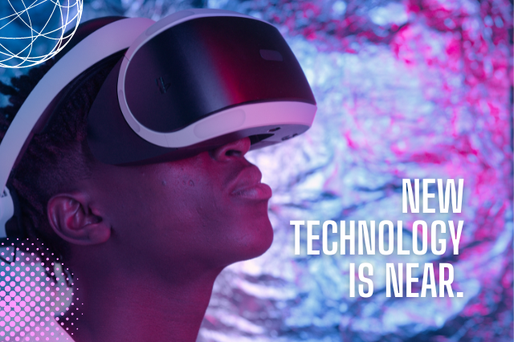

Destaque
O Brasil digital
“O Brasil está atrasado”, você já deve ter ouvido essa frase muitas vezes, mas pelo menos no ramo da tecnologia, o país avança bem. De acordo com Marcia Nakahara, diretora regional da BMC Software no Brasil, apesar dos custos mais elevados, o mercado brasileiro é bastante competitivo...
Leia maisDestaque
Tendências de Inovação em 2024
A busca por inovações nos mais diversos ramos do conhecimento humano foi incessante nas últimas décadas. No ano de 2024, ela não será diferente. Para quem deseja ter uma visão das principais previsões, especialmente no setor tecnológico, manter-se atualizado é mais crucial do que nunca..
Leia mais